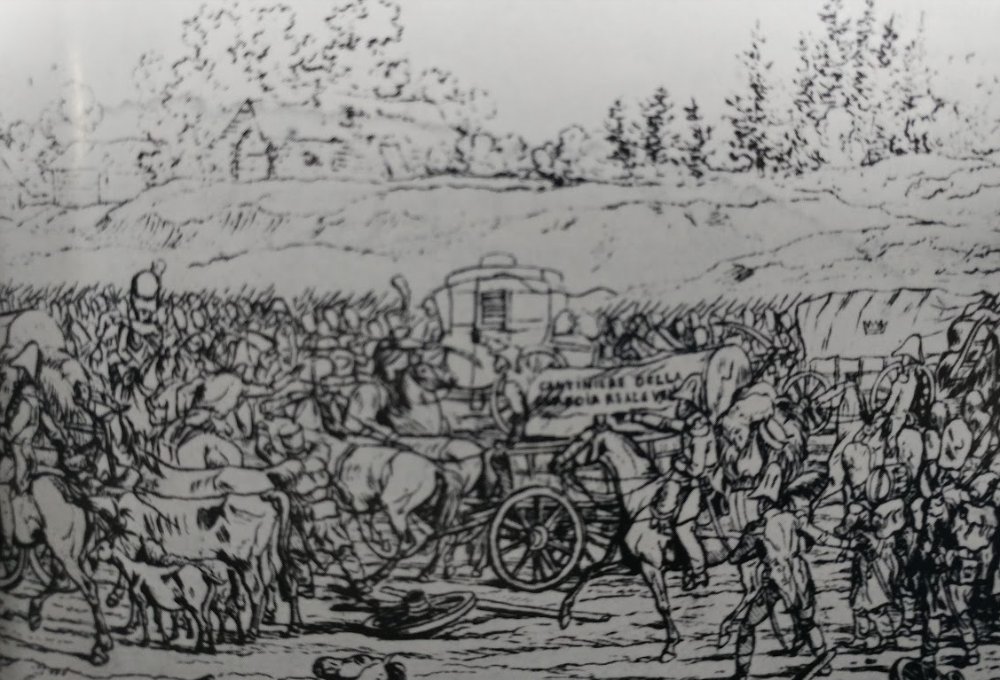
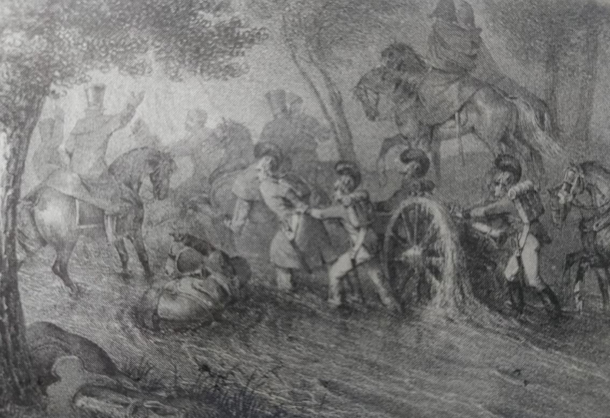

잘못된 시작 - 빌나(Vilna)에서의 프랑스군
게시: 2019-12-02T06:30:52+09:00
네만 강을 건너 리투아니아의 수도 빌나(Vilna, Wilna, Vilnius)에 입성하기까지 총 한 방 쏘지 않았던 프랑스군은 겉으로 보기에는 승승장구 하는 것처럼 보였습니다. 프랑스군이 빌나에 입성할 때, 빌나 주민들의 반응을 봐도 그랬습니다. 당시 빌나는 러시아의 직접 통치 하에 들어간지 약 20년이 채 안 된 상태였었는데, 러시아계 관료들이나 러시아 측에 붙었던 폴란드계 귀족들은 러시아군이 철수할 때 그 뒤를 따라 함께 피난을 가버린 뒤였습니다. 그러다보니 남아있던 폴란드-리투아니아계 주민들은 프랑스군을 해방군으로서 열렬히 환영했습니다. 당시 폴란드 창기병 부대를 이끌고 빌나에 거의 처음으로 입성했던 로만 솔틱(Roman Soltyk) 백작의 목격담에 따르면 거리와 광장은 환영 인파로 가득했고 창문들에는 여인들이 상반신을 내밀고 손수건을 흔들며 기뻐했습니다. 꽃다발과 함성이 난무했고요.

(1812년 당시 나폴레옹의 의붓아들인 외젠 보아르네 휘하 참모진에 있던 알브레히트 아담(Albrecht Adam)이라는 종군화가가 스케치한 그랑다르메 보병들의 행군 모습입니다. 알브레히트 아담은 바이에른 출신의 독일인으로서, 1809년 전쟁 때 보아르네에게 종군 화가로 채용되어 이후 계속 바이에른 궁정 화가 일을 했던 사람입니다. 이 분은 스케치 뿐만 아니라, 나중에 전쟁이 끝난 뒤 이런 스케치와 자신의 기억을 바탕으로 여러 석판화와 유화도 그려 꽤 큰 상업적 성공을 거두었고 그 그림 중 일부는 지금도 유럽 곳곳의 박물관에 걸려 있다고 합니다. 사진은 제가 요즘 거의 베끼다시피 하고 있는 아담 자모이스키의 책 '1812 Napoleon's Fatal March on Moscow'에 포함된 그림입니다. 당시 알브레히트 아담은 주로 이탈리아인들로 편성된 제4군을 따라다녔다고 하니까 저 그림 속 병사들도 아마 이탈리아군일 것입니다.)
그러나 정작 프랑스군이 빌나에서 찾아낸 것은 다 타버린 러시아 군수품의 잿더미 뿐이었습니다. 빌나와 그 인근 지대는 러시아군이 이미 수개월에 걸쳐 장기 주둔하며 먹을 것을 박박 긁어먹고 간 뒤였기 떄문에 식량이 거의 남아 있지 않았습니다. 그렇게 박박 긁어모았던 식량은 러시아군이 철수할 때 용의주도한 바클레이가 모두 불태워 버렸고요. 그런 상황은 원래 예상하지 못했던 바는 아니었기 때문에 나폴레옹은 후방지대에 엄청난 양의 군수품을 잔뜩 쟁여놓았습니다. 그러나 네만 강을 건너자마자, 정확히 이야기하면 네만 강을 건너기 전부터도 말들이 사료 부족과 형편없는 도로에서 기진맥진하여 빠르게 죽어쓰러지기 시작했고, 특히 네만 강을 건넌지 얼마 안되어 불어닥친 폭풍우 속에서 수만 마리의 말이 죽어버린 것이 상황을 정말 악화시켰습니다. 진흙구덩이와 물웅덩이 속에서 말들이 허우적거리다 죽어버리자, 식량을 후방에서 새로 실어오기는 커녕 그나마 이미 싣고 오던 것조차도 버리고 가게 된 것입니다. 그렇게 버려야 했던 짐 중에는 말들의 먹이인 귀리도 잔뜩 있었습니다. 그러다보니 곧 더 많은 말들이 영양 실조로 죽게 되었고 상황은 기하급수적으로 나빠지기 시작했습니다.

(그랑다르메를 덮친 폭풍우로 인해 진흙탕이 된 도로에서 고생하는 포병대를 그린 모습입니다. 이 그림도 '1812 Napoleon's Fatal March on Moscow'에 포함된 것입니다. Christian Wilhelm von Faber du Faur라는 분이 그린 석판화입니다. 이 분도 남부 독일인 뷔르템베르크 출신의 화가인데, 나폴레옹의 그랑다르메에 배속된 종군 화가였습니다.)
그렇게 빌나로 반입되는 식량은 전혀 없던 반면, 먹여살려야 하는 입들은 삽시간에 깜짝 놀랄 정도로 잔뜩 몰려들었습니다. 후방 뿐만 아니라 전방에서도 많은 그랑다르메 병사들이 절뚝거리며 빌나로 몰려든 것입니다. 낙오병과 환자, 부상병들이었습니다. 나폴레옹의 40만 그랑다르메 중 상당수는 단련된 병사들이 아니라 단시간에 긁어모은 어린 신병들이 많았는데, 특히 그런 신병들은 부족한 식량과 열악한 도로 및 위생 환경에 버티지 못했습니다. 이들은 총상이 아닌 강행군에 의해 발과 다리에 생긴 부상과 함께 온갖 질병으로 인해 빌나에 차려진 야전 병원에 드러누워 버렸습니다. 네만 강을 건넌지 1주일 만에, 아무 전투가 없었는데도 놀랍게도 이들의 숫자는 3만 명에 달했습니다. 전체 병력의 7~8%에 해당하는 인원이었습니다. 그 뿐만 아니었습니다. 빌나 및 인근 지역의 폴란드-리투아니아 주민들의 기쁨도 삽시간에 식어버렸습니다. 주민들은 나폴레옹이 과거 영광을 누리던 폴란드-리투아니아 연방을 복원시켜줄 것이라고 생각했습니다. 그것이 어렵더라도 최소한 러시아의 농노제라는 신분의 예속으로부터 농민들을 해방시켜줄 것이라고 기대했습니다. 그러나 주민들은 곧 나폴레옹에겐 그럴 생각이 전혀 없다는 것을 깨닫게 되었습니다. 가령 7월 3일, 나폴레옹은 리투아니아 정부 수립을 발표했는데, 이는 바르샤바 공국과의 합병을 원천 봉쇄하고 그저 리투아니아 지역에서의 징병과 식량 징발을 실행하기 위한 도구일 뿐이라는 것이 명백했습니다. 열의에 찬 빌나 대학의 학생들이 일종의 정치 모임을 만들어 프랑스군 점령 지역은 물론 러시아군 점령 지역에서도 농민들에게 러시아의 압제로부터의 해방을 선전하겠다는 뜻을 전하자, 나폴레옹은 '사회 정치적 소요를 원치 않는다'며 그 제의를 거절했습니다. 또 빌나 대학의 학장인 얀 스나이데츠키(Jan Sniadecki)와 잠깐 만나 이야기를 나누던 나폴레옹은 알렉산드르 이야기가 나오자 '그 사람은 굉장히 뛰어난 황제요 !' 라며 노골적으로 알렉산드르의 편을 들었습니다. 결정적으로, 바르샤바 공국에서 일단의 폴란드 애국자들이 먼 길을 찾아와 폴란드 왕국의 부활을 건의하자 '내 통치 하에는 이해가 서로 충돌하는 많은 집단이 있고 나는 그들의 충돌을 조절해야 한다'라며 그들의 열의에 찬물을 끼얹었습니다. 이 전쟁이 벌어진 주요 원인은 크게 2가지, 영국-러시아 간의 무역 그리고 폴란드 왕국의 부활에 대한 러시아의 반발이었습니다. 그러나 프랑스의 이익을 지키기 위해서 나폴레옹은 러시아 항구를 영국으로부터 닫아야 했고 또 폴란드인들의 충성이 꼭 필요했습니다. 애초에 프랑스와 러시아 간의 전쟁은 도저히 상존할 수 없는 서로의 이해 관계 때문에 벌어진 것이었습니다. 그런데도 나폴레옹은 알렉산드르의 팔을 비틀어서라도 어떻게든 러시아와의 동맹을 다시 끌어내려 했습니다. 즉, 나폴레옹이 이 전쟁에서 바라는 것은 알렉산드르와의 화해였고, 그 때문에라도 나폴레옹은 끝끝내 농노 해방령이나 폴란드 왕국의 부활을 선포하지 않았습니다. 폴란드-리투아니아 주민들의 민심을 이반시킨 것은 그런 민족주의에 대한 배신 뿐만이 아니었습니다. 배고픈 병사들은 어떻게든 먹을 것을 구해야 했고, 당연히 곳곳에서 난폭한 약탈이 자행되었습니다. 그랑다르메의 제1진은 언제나 주민들의 환영을 받으며 입성했지만, 그들이 가뜩이나 부족한 식량을 다 훑어먹으며 지나가자, 제2진을 맞이하는 것은 텅빈 마을들과 버려진 농토 뿐이었습니다. 농민들은 그랑다르메를 산적떼로 인식하게 되었고, 프랑스군이 나타났다는 소문이 퍼지면 농민들은 얼마 안되는 식량과 가축을 몰고 깊은 숲 속으로 피난을 떠나버렸습니다. 농민들은 서로 수군거렸습니다. "프랑스놈들은 우리의 족쇄를 풀어주러 왔다는데, 우리 신발까지 벗겨가더라." 그랑다르메의 병사들도 그에 대응하여 폴란드-리투아니아계 주민들을 사실상 적으로 대했습니다. 요제프 에즈몬트(Jozef Eysmont)라는 시골 신사는 빌나 인근에 있던 자기 장원으로 들어오는 프랑스 기병대를 전통에 따라 빵과 소금으로 환대하려 했으나, 그들은 곧 그의 창고와 마굿간을 탈탈 털더니 더 나아가 아직 익지도 않은 밀과 보리를 다 베어버리고 집안까지 쳐들어와 구석구석을 뒤집어 귀중품을 빼앗았습니다. 그 뿐만 아니라 들고가지 못하는 모든 가구를 아무 의미 없이 때려부수고 창문도 하나하나 다 깨어버렸습니다. 그의 마을 전체가 이런 꼴을 당해야 했습니다. 교회는 물론 무덤까지도 프랑스군의 약탈을 피하지 못했습니다. 한 폴란드 장교는 그에게 빵 한조각을 구걸하며 다가오는 거지를 밀어내려다 그 거지가 그의 친구이던 폴란드계 귀족인 것을 알아보고 깜짝 놀랐습니다. 나폴레옹도 이런 약탈에 대한 보고를 당연히 들었고 대노했습니다. 그는 약탈자들에 대해서 일체의 관용을 베풀지 말고 즉결 처분에 처하도록 엄명을 내렸습니다만, 아무 소용이 없었습니다. 식량을 공급받지 못하는 군대는 약탈을 할 수 밖에 없었고, 병사들은 굶어죽으나 총에 맞아 죽으나 마찬가지라는 절망과 체념이 섞인 상태였기 때문이었습니다. 그런 상태에서 병사들이 취할 행동은 딱 하나였습니다. 탈영이었지요. 탈영은 광범위하게 일어났습니다. 특히 고향에서 너무나 먼 리투아니아 현지에서 탈영병들은 흩어져 집으로 돌아가는 것이 아니라 떼를 지어 산적떼가 되었습니다. 이들은 곳곳에서 현지 주민들 뿐만 아니라 프랑스군 장교나 관료들까지 습격했는데, 이들 때문에 나폴레옹의 명령서를 전달하는 파발마들의 활동이 제약을 받을 정도였습니다. 이런 탈영병들의 숫자는 최소 3만에서 최대 9만까지 되었다고 하는데, 탈영병의 숫자가 이렇게 너무 많다보니 이들을 체포하는 대로 다 처형할 수도 없었습니다. 간혹 이들을 잡아들일 경우 일부만 처형하고 대부분은 다시 부대에 편입시켰는데, 이들은 대부분 다시 탈영했습니다. 결국 네만 강을 건넌 뒤 나폴레옹에게 들어오는 것은 온통 나쁜 소식 뿐이었습니다. 그런데 모두 나쁜 소식만 있는 것은 아니었습니다. 그가 불시에 네만 강을 건너 빌나를 들어친 것은 확실히 기습 효과가 있었고, 그로 인해 러시아군을 궤멸시킬 절호의 기회가 찾아온 것입니다.
Source : 1812 Napoleon's Fatal March on Moscow by Adam Zamoyski https://en.wikipedia.org/wiki/Albrecht_Adam
https://en.wikipedia.org/wiki/Christian_Wilhelm_von_Faber_du_Faur